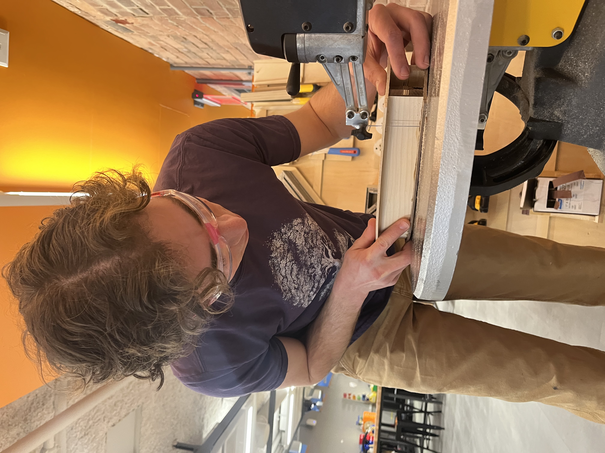

Body Glue-Up
Closing Up The Body
After trimming the bracing to fit perfectly inside the sides, it was time to glue everything together. This was a relatively simple, but incredibly stressful process. I glued the back on with the body still in the mold to hold the shape perfectly symmetrical. Once dry, I removed it from the mold and glued the top plate on. I finished this step by carefully trimming the excess with the scroll saw.


Closing up the body

Trimming the excess